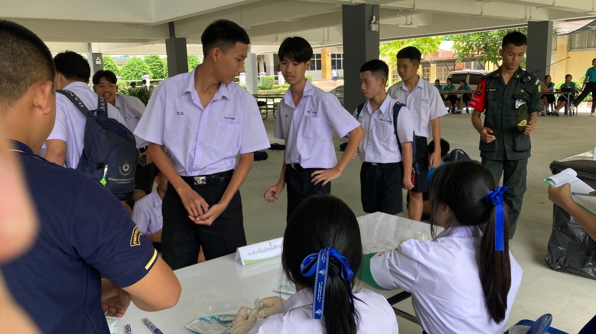
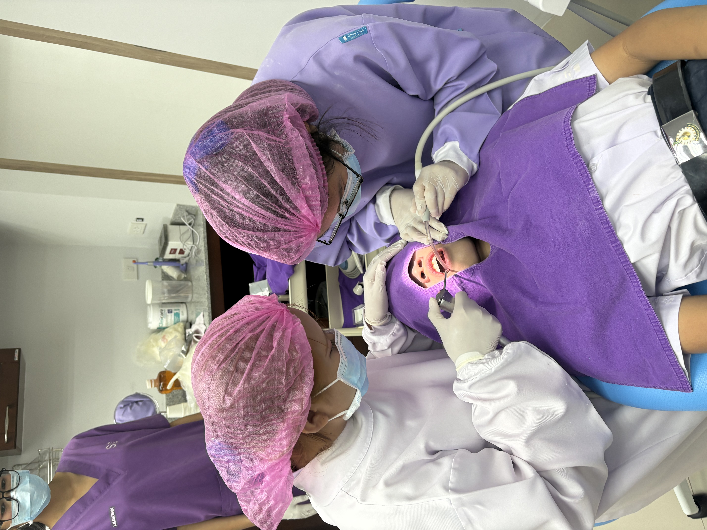
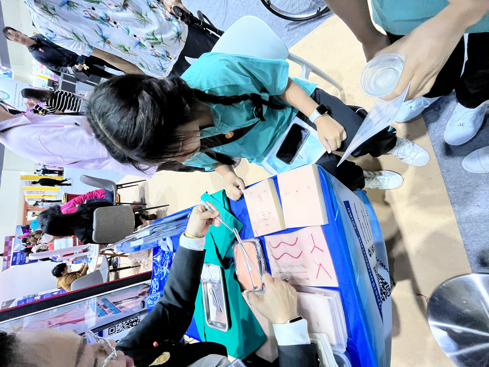
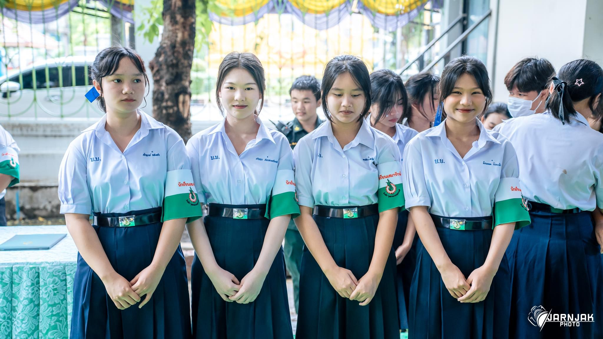

กิจกรรม / ประสบการณ์

การเรียนรู้จากการปฏิบัติ
ได้เรียนรู้เกี่ยวกับเครื่องเอกซเรย์ ที่ใช้สำหรับการเอกซเรย์ทางทันตกรรม จากประสบการณ์จริง

การทำงานร่วมกัน
ฝึกการทำงานร่วมกับผู้อื่น และเรียนรู้จากประสบการณ์ ในสถานที่ทำงาน

การทำงานร่วมกับผู้อื่น
ทำงานร่วมกับชุมนุมเสมารักษ์ ฝึกการแบ่งหน้าที่ และการทำงานเป็นทีม

การปฏิบัติงานจริง
ฝึกการสื่อสาร การประสานงาน และการทำงานร่วมกับผู้อื่น

การทดลองใช้
ได้เรียนรู้จากการทดลองใช้ และสังเกตการทำงาน ของอุปกรณ์ทางการแพทย์

การทำงานร่วมกับคนอื่น
ในบทบาทแกนนำเสมารักษ์ ได้ฝึกความมั่นใจ ความรับผิดชอบ และการทำงานเป็นทีม